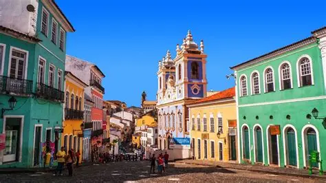
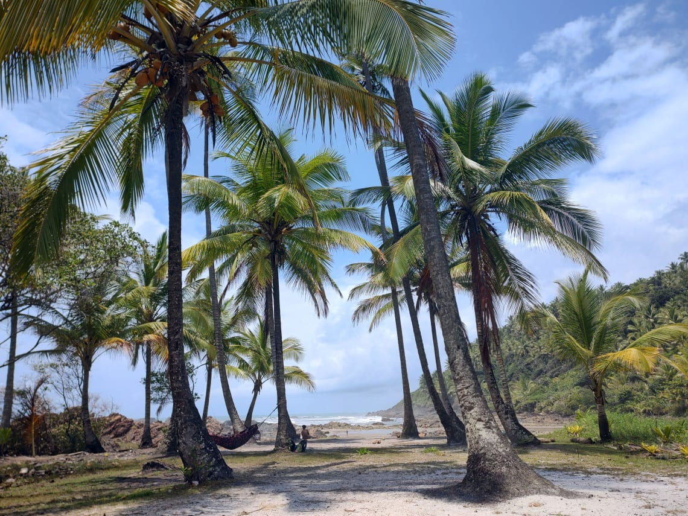
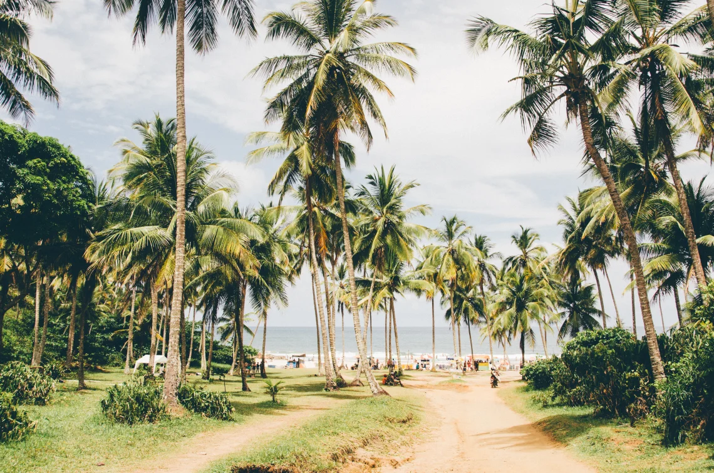
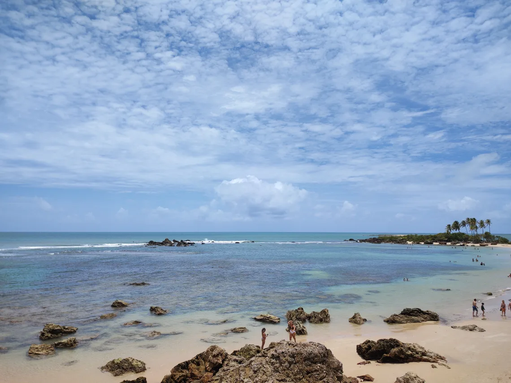
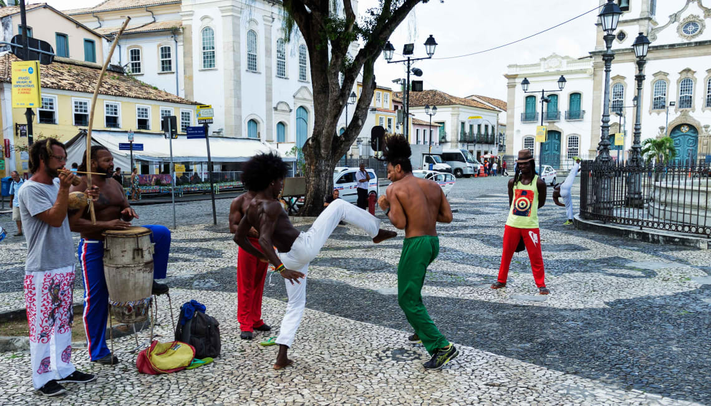

Destino da Bahia ainda pouco conhecido, Serra Grande é um paraíso escondido entre Ilhéus e Itacaré. Diferente das badaladas vizinhas, essa pequena cidade baiana é perfeita para quem busca sossego e longas faixas de areia vazias.
Localizada na Costa do Cacau, a região é rodeada de Mata Atlântica, mar azulzinho, belíssimos coqueirais à beira-mar, fazendas de cacau, cachoeiras incríveis e praias de águas mornas. Imperdível!
Saiba mais
Itacaré é um destino da Bahia que está em alta, atraindo muitos apaixonados pelo ecoturismo. E não é à toa! Com praias paradisíacas, boas ondas, diversas cachoeiras e trilhas em meio à Mata Atlântica, a pequena cidade baiana é realmente um paraíso.
Sem falar em todo o charme e energia boêmia da sua famosa Rua Pituba, onde em cada esquina rola um som e bons drinks de cacau. Se você gosta de curtir o dia de sol na areia e depois aproveitar uma noitada, esse é seu lugar.
Saiba mais
Destino muito procurado por viajantes do mundo todo, Morro de São Paulo é uma charmosa vila que reúne praias paradisíacas, mar azulzinho, vida noturna agitada e boa gastronomia.
O lugar é ideal para quem quer relaxar com os pés na areia, mergulhar em águas cristalinas e se deliciar provando as caipirinhas de cacau.
Saiba mais
Em uma lista de melhores destinos na Bahia, não poderia faltar a capital do Axé. Salvador é uma explosão de cultura, história, sabores e belezas naturais. Por lá, é possível conhecer a fundo a cultura baiana, seja através da gastronomia, museus ou construções históricas.
As belíssimas praias da cidade também são perfeitas para aproveitar o calor de Salvador. Não deixe de dar um mergulho na agitada Praia da Barra e curtir um fim de tarde em Itapuã.
Saiba mais